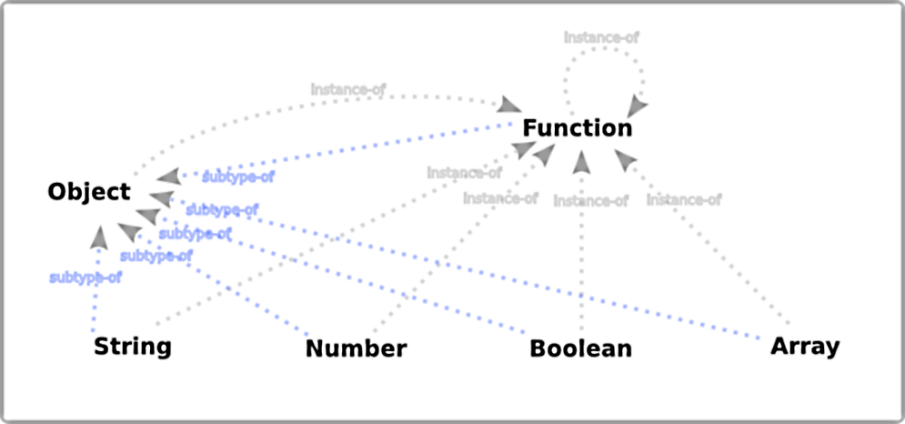

Functional Javascript Design Patterns
JavaScript Overview
Type System
Objects
Functions
Closures
Prototypes
JavaScript Overview - Type System
Javascript has dynamic and loosly typed type system. In JavaScript, almost everything is an object. Even primitive types, except null and undefined, are treated as objects.
Number
String
Boolean
Object
Function
Array
Date
Math
RegExp
Null
Undefined

JavaScript Overview - Objects
JavaScript objects can be thought of as simple collections of name-value pairs, similar to dictionaries. The "name" part is a JavaScript string, while the value can be any JavaScript value — including more objects. This allows you to build data structures of arbitrary complexity.
JavaScript Overview - Functions
In JavaScript every function is actually a Function object and is used to perform a task or calculates a value.
arguments -- An Array/object containing the arguments passed to the function
arguments.length -- Stores the number of arguments in the array
arguments.callee -- Pointer to the executing function (allows anonymous functions to recurse)
length -- The number of arguments the function was expecting myFunc(x,y) = 2
constructor -- function pointer to the constructor function
prototype -- allows the creation of prototyes
Function object has the following properties:
apply -- A method that lets you more easilly pass function arguments
call -- Allows you to call a function within a different context
bind -- creates a new function that, when called, has its 'this' set to the provided value, with a given sequence of arguments preceding any provided when the new function is called
toString -- Returns the source of the function as a string
*toSource -- Returns the source of the function as a string
Every function has the following methods:
JavaScript Overview - Functions
A function definition (declaration) consists of the function keyword, followed by:
The name of the function (optional)
List of arguments to the function, enclosed in parentheses and separated by commas
Statements that define the function, enclosed in curly brackets, { }
JavaScript Overview - Closures
JavaScript allows for the nesting of functions and grants the inner function full access to all the variables and functions defined in the outer function. However, the outer function does not have access to the variables and functions defined inside the inner function.
JavaScript Overview - Prototypes
All objects in JavaScript are descended from Object nad they inherit methods and properties from Object.prototype, although they may be overridden.
JavaScript does not feature a classical inheritance model; it uses a prototypal one.
Inheritance in JavaScript uses prototype chains
null, by definition, has no prototype, and acts as the final link in this prototype chain
hasOwnProperty is the only thing in JavaScript which deals with properties and does not traverse the prototype chain

JavaScript Overview - Prototypes - example
Functional Programming Overview
What is functional programming?
Why Functional?
JavaScript and Functional programming
What is functional programming
-
No Side Effects
A function should do one thing. Any function that does something other than its single intended purpose is said to have side effects. In pure functional programming languages side effects are not allowed, but in JavaScript there are no such guarantees.
-
Referential Transparency
Ability of code to be evaluated in a predictable manner, not influenced by external state. That same code should always output the same value for a given set of arguments, and only changing those arguments can a output value be different.
-
Immutability
Immutability, or the inability for variables to changes their values once created. In other words, all things created should strive to be constants. In JavaScript there is no internal mechanism to enforce this as there is in pure functional programming languages like Haskell and friends. JavaScript is dynamic and without strict typing, and so keeping variables immutable in a codebase is merely a convention.
-
Higher Order Functions
A higher-order function is a function that can accept functions as arguments, and/or can return a function.
Why Functional?
"Functional programming isn't the goal. The goal is to simplify the complicated."
Write less code
Fewer errors
Easy concurrency
Testability
Motiviation:
but...
Don't be too busy... It is worth it :)

JavaScript and Functional programming
It is a cross paradigm language, allowing a variety of different programming paradigms: OO, functional, procedural
Javascript is not pure functional programming, but it allows one to program in a functional way.
Functions are "first-class" objects
Functions can accept function as argumrnt and return function
Anonymous functions
Closuress
Supported:
Pure functions
Immutability
Mandatory function result return (implicitly returns 'undefined' if missing return statements)
Tail recursive functions
Not directly supported:
Pure function

Same input, same ouput
No side effects
Credits and resources
Inspired by the work of many other people I have learned from
Brian Lansdorf: Hey Underscore, You're doing it wrong
Functional JavaScript by Oliver Steele
Reginald Braithwaite and allong.es
...
Motiviation:
Thank you!
/
#